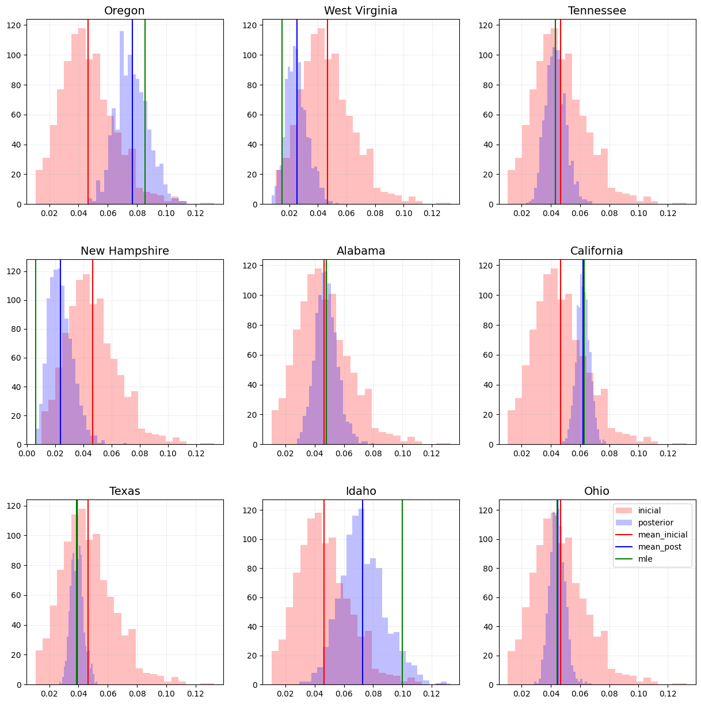
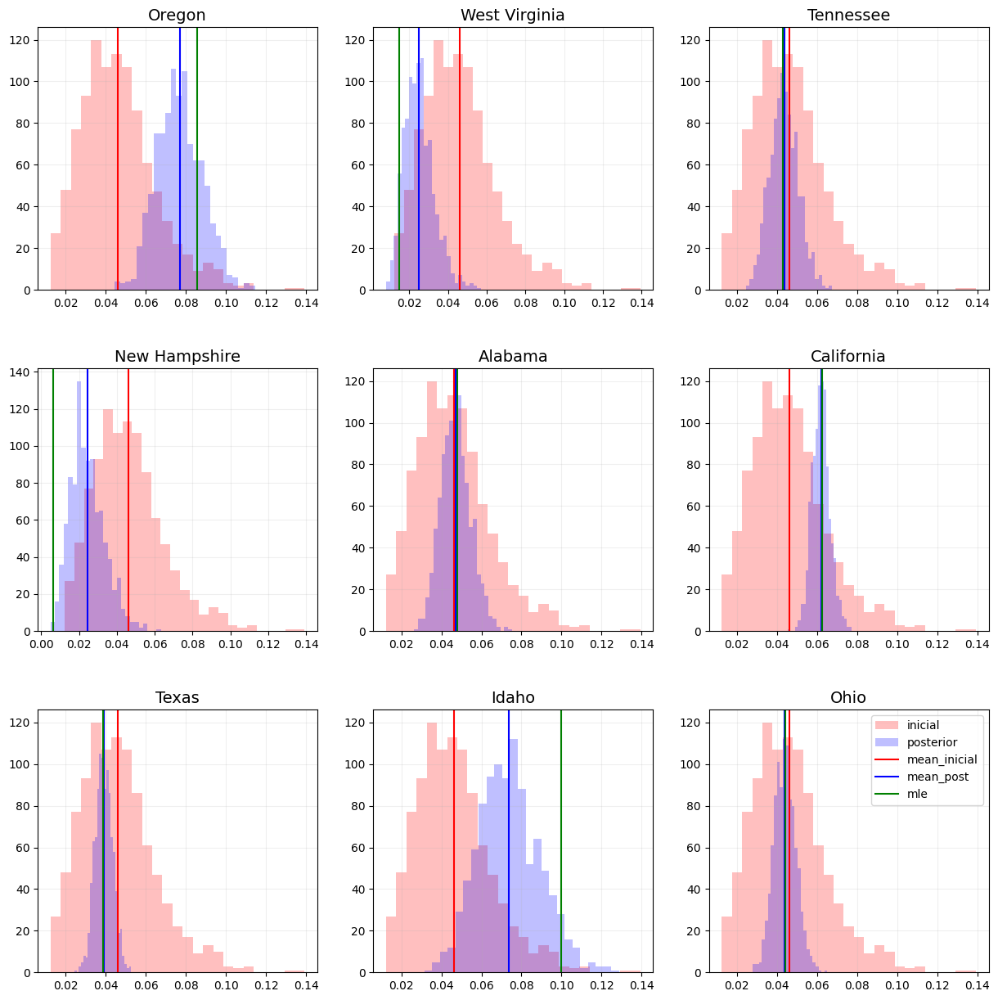
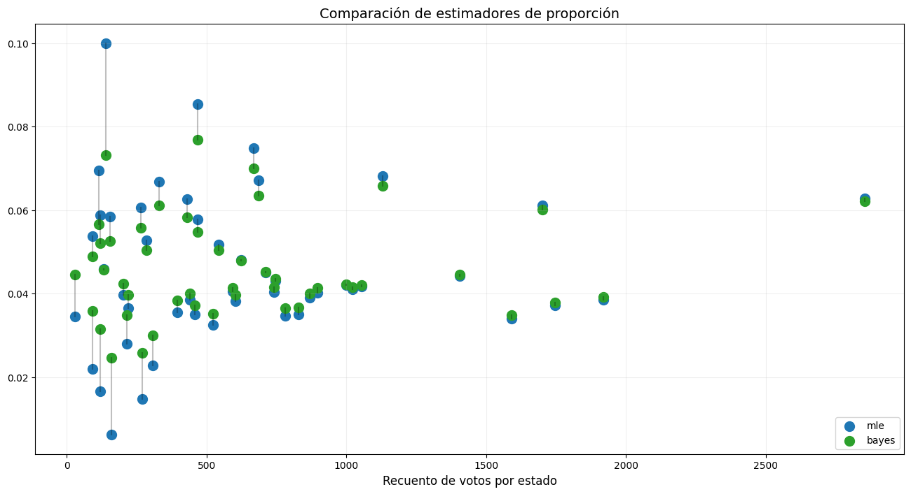
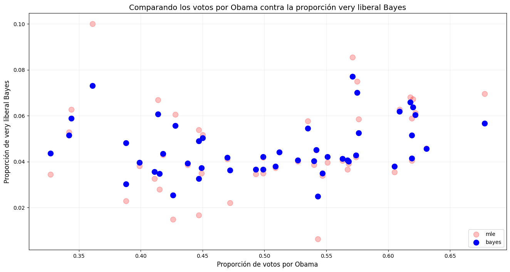

Code
import numpy as np
import pandas as pd
import matplotlib.pyplot as plt
from scipy.stats import beta
plot_settings = {'title':14, 'text':12, 'annotation':10, 'figsize':(16,8)}import numpy as np
import pandas as pd
import matplotlib.pyplot as plt
from scipy.stats import beta
plot_settings = {'title':14, 'text':12, 'annotation':10, 'figsize':(16,8)}Por Miguel Ángel Castañeda Martínez.
Cuando empecé mi trayectoria como científico de datos tenía escaso conocimiento de lenguajes de programación, modelos de aprendizaje de máquina, análisis exploratorio de datos, etc. En un inicio imaginaba que la analítica de datos iba más por el camino de los sistemas, el poder computacional, y los algoritmos, pero nunca imaginé que tuviera algo que ver con estadística. Para mí la estadística era una materia más con la que se tenía que cumplir en la carrera, la veía como algo arcaico incluso tedioso. Poco imaginaba que años después terminaría siendo de mis temas favoritos, que encontraría fascinante el inmenso mundo del que se trata, y que me daría cuenta del enorme abanico de aplicaciones que tiene.
En este breve artículo intento mostrar, con un ejemplo aplicado, las diferencias entre un enfoque frecuentista y un enfoque bayesiano. Cabe destacar que es la opinión de una persona que empieza a adentrarse en el mundo de la estadística bayesiana, que considera que la mejor manera de asimilar el conocimiento es compartiéndolo, y que por tanto está haciendo un esfuerzo por transmitir sus primeras impresiones e intuiciones del tema.
El ejemplo que utilizaré para mostrar los conceptos es con datos de encuestas realizadas para la elección presidencial del 2008 en Estados Unidos, mismos que se pueden encontrar en el portal de Pew Research Center. Este ejemplo es una expansión de un trabajo realizado para la materia de Fundamentos de estadística impartida en la Maestría en Ciencia de Datos del ITAM, por quien rápidamente se posicionaría como una de las mejores profesoras que he tenido en mi trayectoria profesional, Teresa Ortiz.
Como es bien sabido, la elección de Estados Unidos en el 2008 la ganó el candidato presidencial por el partido demócrata, Barack Obama. Para ilustrar ambos enfoques, se realizará una comparación entre la proporción de la población de cada estado que tiene ideología política “muy liberal” (en lo subsecuente very liberal), contra el porcentaje de votos que recibió Obama en cada estado.
Para hacer dicha comparación se tienen dos conjuntos de datos, el primero de ellos es el de las encuestas realizadas a la ciuidadanía del país, para el cual se tienen las siguientes variables de interés:
state: Estado en el que se realizaró la encuesta.survey: Identificador de la encuesta aplicada en cada registro.ideo: Ideología política del encuestado.Primero se hace una inspección rápida de las encuestas para identificar variables de interés
poll_data = pd.read_stata('./pew_research_center_june_elect_wknd_data.dta')Se trabajará únicamente con las variables [state, survey, ideo].
state: Estado en el que se realizaró la encuesta.survey: Identificador de la encuesta aplicada en cada registro.ideo: Ideología política del encuestado.Paso 1: Se agrupan los datos por estado para extraer las encuestas que se aplicaron a cada uno.
state = poll_data.groupby(by='state').count()
state.reset_index(inplace=True)
state = state[['state', 'survey']]Paso 2: Se agrupa por estado e ideología política para poder filtrar a las encuestas que son very liberal.
ideo = poll_data.groupby(by=['state','ideo']).count()
ideo.reset_index(inplace=True)
ideo = ideo[['state', 'ideo', 'survey']]
very_liberal = ideo.loc[ideo['ideo'] == 'very liberal']Paso 3: Se unen los dos conjuntos de datos agrupados.
prop = pd.merge(left=state,
right=very_liberal,
how='left',
on='state',
suffixes=('_total','_very_lib'))Paso 4: Se crean variables con la proporción de very liberal de máxima verosimilitud para cada estado.
prop['prop_mle'] = prop['survey_very_lib'] / prop['survey_total']
#Se eliminan estados que no son de interés
prop = prop[~prop['state'].isin(['washington dc', 'hawaii', 'alaska'])]
prop.head()| state | survey_total | ideo | survey_very_lib | prop_mle | |
|---|---|---|---|---|---|
| 0 | alabama | 624 | very liberal | 30 | 0.048077 |
| 1 | arizona | 542 | very liberal | 28 | 0.051661 |
| 2 | arkansas | 307 | very liberal | 7 | 0.022801 |
| 3 | california | 2854 | very liberal | 179 | 0.062719 |
| 4 | colorado | 468 | very liberal | 27 | 0.057692 |
Paso 5: Se visualiza el comportamiento del número de encuestas realizadas por estado contra el estimador de máxima verosimilitud.
plt.figure(figsize=plot_settings['figsize'])
plt.scatter(x=prop['survey_total'], y=prop['prop_mle'], s=150, color='blue')
for idx in prop.index:
x = prop.loc[idx]['survey_total']
y = prop.loc[idx]['prop_mle']
s = prop.loc[idx]['state'].upper().replace(' ', '')[0:4]
plt.text(x=x, y=y, s=s, fontsize=plot_settings['annotation'], rotation=60)
plt.title('Proporción de máxima verosimilitud', fontsize=plot_settings['title'])
plt.xlabel('Recuento de votos por estado', fontsize=plot_settings['text'])
plt.grid(alpha=0.2)
plt.show()
Ahora revisamos los datos de la votación real, para lo cual se realizan los siguientes pasos:
Paso 1: Se une al conjunto de datos el porcentaje de votos por Obama de cada estado.
results = pd.read_csv('./2008ElectionResult.csv')
#se descartan estados que no son de interés
results = results[~results['state'].isin(['District of Columbia', 'Hawaii', 'Alaska'])]
results['state'] = results['state'].str.lower()
prop = pd.merge(left=prop,
right=results[['state', 'vote_Obama_pct']],
how='left',
on='state')Paso 2: Se comparan los votos de obama con los que son very liberal
plt.figure(figsize=plot_settings['figsize'])
plt.scatter(x=prop['survey_total'], y=prop['vote_Obama_pct']/100, color='red', s=100, label='Obama')
plt.scatter(x=prop['survey_total'], y=prop['prop_mle'], color='blue', s=100, label='Very liberal')
plt.title('Proporción de votos por Obama contra proporción de very_liberal', fontsize=plot_settings['title'])
plt.xlabel('Recuento de votos por estado', fontsize=plot_settings['text'])
plt.grid(alpha=0.2)
plt.legend(fontsize=plot_settings['annotation'])
plt.show()Los datos muestran un comportamiento similar en el eje del recuento de votos por estado, sin embargo, el hecho de que se encuentren en escalas diferentes dificulta el poder encontrar algún patrón o similitud entre ambos conjuntos.
Para resolver lo anterior, visualizamos los datos en la misma escala de visual, pero respetando su orden de magintud.
# Plot two lines with different scales on the same plot
fig = plt.figure(figsize=(14,6))
s = 100
#Gráficas
ax1 = fig.add_axes([0, 0, 1, 1])
ax2 = fig.add_axes([0, 0, 0, 0]) #
ax2 = ax1.twinx()
lns1 = ax1.scatter(x=prop['survey_total'], y=prop['vote_Obama_pct']/100, color='red', s=s, label='Obama')
lns2 = ax2.scatter(x=prop['survey_total'], y=prop['prop_mle'], color='blue', s=s, label='Survey')
#Anotaciones y estilo
ax1.set_xlabel('Recuento de votos por estado', fontsize=plot_settings['text'])
ax1.set_ylabel('Obama scale', fontsize=plot_settings['text'], loc='bottom')
ax2.yaxis.set_label_position("right")
ax2.set_ylabel('Survey scale', fontsize=plot_settings['text'], loc='bottom')
ax1.legend(loc=8, fontsize=plot_settings['annotation']); ax2.legend(loc=4, fontsize=plot_settings['annotation'])
for idx in prop.index:
x1 = prop.loc[idx]['survey_total'] + 30
y1 = prop.loc[idx]['vote_Obama_pct']/100
s1 = prop.loc[idx]['state'].upper().replace(' ', '')[0:2]
ax1.text(x=x1, y=y1, s=s1, fontsize=plot_settings['annotation'], rotation=60, color='red')
x2 = prop.loc[idx]['survey_total'] - 80
y2 = prop.loc[idx]['prop_mle']
s2 = prop.loc[idx]['state'].upper().replace(' ', '')[0:2]
ax2.text(x=x2, y=y2, s=s2, fontsize=plot_settings['annotation'], rotation=60, color='blue')
plt.title('Comparando los votos por Obama\ny la proporción de very liberal por estado, misma escala', fontsize=plot_settings['title'])
ax1.grid(alpha=0.2)
plt.show()
Con la visualización anterior se vuelve evidente que el número de votos que tuvo Obama por estado sigue un patrón sumamente similar a la proporción de personas por estado que se consideran very liberal.
Se grafican los votos por Obama contra la proporción de liberales
plt.figure(figsize=plot_settings['figsize'])
plt.scatter(x=prop['vote_Obama_pct']/100, y=prop['prop_mle'], color='tab:red', s=100)
for idx in prop.index:
x = prop.loc[idx]['vote_Obama_pct']/100
y = prop.loc[idx]['prop_mle']
s = prop.loc[idx]['state'].upper().replace(' ', '')[0:4]
plt.text(x=x, y=y, s=s, fontsize=plot_settings['annotation'], rotation=60)
plt.title('Comparando los votos por Obama contra la proporción very liberal MLE', fontsize=plot_settings['title'])
plt.xlabel('Proporción de votos por Obama', fontsize=plot_settings['text'])
plt.ylabel('Proporción de very liberal MLE', fontsize=plot_settings['text'])
plt.grid(alpha=0.2)
plt.show()
En general, del gráfico anterior se ve una ligera tendencia a que Obama tenga una mayor proporción de votantes por estado a medida que la proporción de personas very liberal aumenta.
Esta tendencia se rompe en estados como IDAH, OKLA, en donde se esperaría que Obama hubiera tenido mayor proporción de votantes; o NEWH, en donde se esperaría que no hubiera tenido tantos votos
Paso 1: Generamos una función para calcular los parámetros \(a\), \(b\) de la inicial dados los valores de \(\mu\), \(\sigma\).
def get_beta_params(mu, var):
a = mu * (-mu**2 + mu - var) / var
b = (mu - 1) * (mu**2 - mu + var) / var
return [a, b]Paso 2: Inspeccionamos visualmente el comportamiento de las proporciones por estado.
m = prop['prop_mle'].mean()
s2 = prop['prop_mle'].var()
fig, ax = plt.subplots(figsize=(5,5))
plt.hist(x=prop['prop_mle'], color='grey', alpha=0.6)
plt.title(f"Proporciones por estado\n( $\mu$: {m:.6f}, $\sigma^2$: {s2:.6f} )", fontsize=plot_settings['title'])
plt.grid(alpha=0.2)
plt.show()
Paso 3: Tomando la media y la varianza de la distribución anterior, obtenemos los valores \(a\), \(b\) de la distribución inicial.
a, b = get_beta_params(m, s2)Paso 4: Comparamos las iniciales y las posteriores de 9 estados de interés
#Parámetros de simulación
sims = 1_000
inicial = beta.rvs(a=a, b=b, size=sims)
inicial_mean = inicial.mean()
#Parámetros de panel
panels = 3
states_idx = [34,45,39,26,0,3,40,9,32]
#Parámetros de figura
fig = plt.figure(figsize=(15,15))
spec = plt.GridSpec(ncols=panels, nrows=panels, hspace=0.3)
k = 0
for idx in states_idx:
state = prop.loc[idx]['state']
#Cálculo de la posterior
n = prop.loc[idx]['survey_total']
x = prop.loc[idx]['survey_very_lib']
posterior = beta.rvs(a=(a+x), b=(b+n-x), size=sims)
#Gráficas
ax_n = f"ax{k}"
ax_n = fig.add_subplot(spec[k])
ax_n.hist(x=inicial, bins=25, color='red', alpha=0.25, label='inicial')
ax_n.hist(x=posterior, bins=25, color='blue', alpha=0.25, label='posterior')
ax_n.axvline(x=inicial.mean(), color='red', label='mean_inicial')
ax_n.axvline(x=posterior.mean(), color='blue', label='mean_post')
ax_n.axvline(x=prop.loc[idx]['prop_mle'], color='green', label='mle')
#Anotaciones y estilo
ax_n.set_title(state.title(), fontsize=14)
ax_n.set_xlabel('')
ax_n.grid(alpha=0.2)
k += 1
#Anotaciones generales.
plt.legend()
plt.show()
La relevancia del panel anterior radica en que se puede ver con claridad el efecto de la verosimilitud de cada estado en la distribución inicial. Al considerar la misma inicial para todos los estados se está modelando el comportamiento promedio del país sobre cada uno de los estados. Sin embargo, al haber modelado la verosimilitud de cada estado de manera independiente, se puede ver que la posterior de cada uno tiene comportamientos distintos dependiendo de varios posibles factores, por ejemplo:
Obtenemos el estimador de la posterior para todos los estados
#Se crea columna vacía en dataframe
prop['prop_bayes'] = np.nan
for idx in prop.index:
#Cálculo de la posterior
n = prop.loc[idx]['survey_total']
x = prop.loc[idx]['survey_very_lib']
posterior_mean = beta.rvs(a=(a+x), b=(b+n-x), size=sims).mean()
prop.loc[prop.index == idx, 'prop_bayes'] = posterior_meanComparamos el desplazamiento del estimador MLE provocado por la distribucón inicial bajo un enfoque bayesiano
plt.figure(figsize=plot_settings['figsize'])
plt.scatter(x=prop['survey_total'], y=prop['prop_mle'], color='tab:blue', s=100, label='mle')
plt.scatter(x=prop['survey_total'], y=prop['prop_bayes'], color='tab:green', s=100, label='bayes')
for idx in prop.index:
x = prop.loc[idx]['survey_total']
y_mle = prop.loc[idx]['prop_mle']
y_bayes = prop.loc[idx]['prop_bayes']
plt.plot([x,x], [y_mle, y_bayes], color='black', alpha=0.25)
plt.title('Comparación de estimadores de proporción', fontsize=plot_settings['title'])
plt.xlabel('Recuento de votos por estado', fontsize=plot_settings['text'])
plt.legend(fontsize=plot_settings['annotation'], loc=4)
plt.grid(alpha=0.2)
plt.show()
Nuevamente graficamos la proporción de votos que tuvo obama contra la proporción de very liberal por estado, en esta ocasión con los resultados del enfoque bayesiano.
plt.figure(figsize=plot_settings['figsize'])
plt.scatter(x=prop['vote_Obama_pct']/100, y=prop['prop_mle'], color='red', s=100, label='mle', alpha=0.25)
plt.scatter(x=prop['vote_Obama_pct']/100, y=prop['prop_bayes'], color='blue', s=100, label='bayes')
plt.title('Comparando los votos por Obama contra la proporción very liberal Bayes', fontsize=plot_settings['title'])
plt.xlabel('Proporción de votos por Obama', fontsize=plot_settings['text'])
plt.ylabel('Proporción de very liberal Bayes', fontsize=plot_settings['text'])
plt.legend(fontsize=plot_settings['annotation'], loc=4)
plt.grid(alpha=0.2)
plt.show()
Utilizando el paquete de python sympy para cálculo simbólico, se obtuvieron las ecuaciones que resulven los parámetros \(a\), \(b\) de una distribución conjugada beta-binomial dados los valores de \(\mu\), \(\sigma\).
from sympy import symbols, Eq, solve
from sympy.abc import mu, sigmaa, b, s2, m = symbols("a b sigma^2 mu")
equation_1 = Eq( a / (a+b), m )
equation_2 = Eq( a*b / ((a+b)**2 * (a + b + 1)), s2 )
solution = solve((equation_1, equation_2), (a, b))equation_1\(\displaystyle \frac{a}{a + b} = \mu\)
equation_2\(\displaystyle \frac{a b}{\left(a + b\right)^{2} \left(a + b + 1\right)} = \sigma^{2}\)
print("Solución para el parámetro 'a':\n")
solution[0][0]Solución para el parámetro 'a':
\(\displaystyle \frac{\mu \left(- \mu^{2} + \mu - \sigma^{2}\right)}{\sigma^{2}}\)
print("Solución para el parámetro 'b':\n")
solution[0][1]Solución para el parámetro 'b':
\(\displaystyle \frac{\left(\mu - 1\right) \left(\mu^{2} - \mu + \sigma^{2}\right)}{\sigma^{2}}\)
Las expresiones anteriores se puegen programar directamente en una función de python